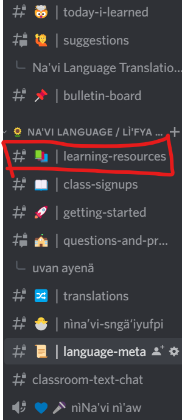
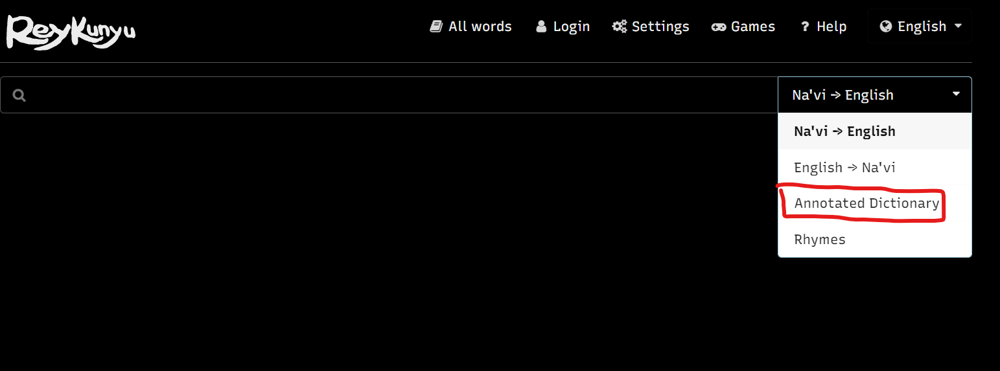

100 Days of Na'vi
Trr azatsìvosìng hu lì'fya leNa'vi
Introduction
Many Questions are not about the language itself, but about how to learn it. Finding a path to go can be hard, especially if that is the first foreign language you learn. This 100 days challenge is designed to give people an idea of how they could keep going and do something with the language every day, for 100 days.
This guide is divided into ten chapters with ten days each. The first five chapters focus on making you study the basic grammar concepts and using them regularly, while the second half focuses on practical skills like writing, speaking, reading and listening and only occasionally makes you aware of some theoretical points you might still be missing.
Some things to consider while following the 100 days:
This is not a textbook. There are no explanations included, the document wants you to explore other resources and/or interact with the community to learn. All this Document is is a list of activities, if you do one a day you will not have the problem “what to do now?” for the next 100 days.
You don't have to follow these days in the exact order, or do one day per day. The chapters build on each other, but if the pace is too fast or too slow, feel free to go through the days faster or spend two days on one day. It is impossible to create something that has the perfect speed for everyone, so use these days in the way they are the most useful for you! And if that means that you want to learn infixes before the whole noun stuff, then feel free to switch around the chapters!
Do I have to learn the word of the day or fulfill the chapter task and the extra challenges? Of course not. Use the parts you find helpful for yourself and leave those out which are too much for you to do.
You always speak of Kelutral. I am not on Kelutral, but in another Na’vi community or in none at all. What should I do? Many parts of this document directly ask you to use the advantages of a language community and interact there. Also I very often refer to features of the Kelutral community like the daily questions the Eytukan bot asks there, and the resource overview there, because that is the community I am active in. Of course you can follow these days also in another discord community like for example Learn Na'vi, but you’ll have to adapt some small things then. If you are a native German, the German Lerngruppe might be the best place for you! Since interaction is the most important part of learning a new language and also a big part of this challenge, you should at least be part of one language community in order to be as successful as possible in your language learning journey. And discord is the best place if you want to also do the later tasks which will involve speaking!
Is there anything else I need? Except for some motivation and passion for the language, the only thing that comes handy is a notebook. I highly recommend writing stuff down physically, although digital notes of course also are ok. While you are studying and learning new things, always make sure to write them down in your notes, together with some example sentences!
With all of this said, let's finally start: Nivume nìprrte’ nga - May you learn with pleasure!
Links
- Chapter one - The first steps
In this chapter you will do the first stepts of your learning journey. This involves finding out which tools there are for you to use, but also learning some basic words and the first bits of grammar so you can start building your own sentences.
Grammar topics: Pronunciation, simple sentences, subject and direct object, indirect object, lu vs. 'efu vs. tok
- Chapter two - Nouns!
You can write simple sentences, now it's time to get more details into them by describing nouns. In this chapter you'll learn a lot of ways to do that!
Grammar topics: Plural, adjectives, describing subclauses, this and that and more, genitive
- Chapter three - Verbs!
The next very important word group we have to look at in detail are verbs. In Na'vi they work a bit different from English, and in this chapter you will learn about that!
Grammar topics: Tense, positive/negative mood, adverbs, adpositions, aspect, subjunctive, combined infixes
- Chapter four - Connecting Sentences
Writing short sentences is great, but what is even better is connecting multiple sentences to more complex ones. So that is what you will learn in this chapter!
Grammar topics: Basic conjunctions, if-clauses, f-words, temporal clauses
- Chapter five - Last Bits of Base Grammar
You already know a lot, now it is time to take a look at some last bits of the basic grammar topics. Of course after this chapter there will still be a lot to learn, but you'll know all the important basics!
Grammar topics: Topical, negation, questions, comparisons,
- Chapter six - Let's Speak!
If you are the average Na'vi learner, then probably until now you have avoided to actually speak the language. Many people are afraid of starting to speak, but it is the only way to gain more fluency! So this chapter will try to help you with that.
Grammar topics: Causative, reflexive
- Chapter seven - Let's Listen!
This chapter you'll focus on improving your listening skills. Listening is a skill that can only be acquired by actually listening to spoken Na'vi, so let's do exactly that!
Grammar topics: Participles, numbers
- Chapter eight - Let's Write
Probably most of your Na'vi communication will be written, so let's practice that a bit! Since you already practiced speaking a bit at this point, some writing should not be a problem for you.
Grammar topics: Some more affixes, particles
- Chapter nine - And again Speaking
Speaking is the most effective thing to do when you want to learn a language, so let's focus on that again!
Grammar topics: Direct and indirect speech, <ats> infix
- Chapter ten - The last Steps
You are nearly done with this 100 days challenge, in this chapter you will do some more practice and learn some last important things. Also it is time to think about what you want to do after you finished all 100 days!
Grammar topics: Commands, polite speech
Chapter one - The first Steps
In the first chapter you will start your learning journey, find useful tools to use in the future and learn your first few pieces of grammar!
Chapter Challenge: Can you introduce yourself in Na’vi in the nìNa’vi nì’aw (Na’vi only) chat in the Kelutral Discord server before you finish this chapter? Greet everyone, tell them your name and try to add any additional information you wanna give - even if you haven’t learned how to say something you can already try, someone surely will correct you and help you learn even faster!
001 | 002 | 003 | 004 | 005 | 006 | 007 | 008 | 009 | 010
Day 1 - The sound of Na’vi
Trr a'awve - Pam lì'fyayä leNa'vi
Word of the day: kaltxì - hello
Maybe you just started today and are now really excited to learn this beautiful language - but where to start? This is one of the most asked questions in the Na’vi community. And the answer is nearly always the same: Learn the pronunciation! But how?
Even though there are a lot of resources, the recommended way to learn about pronunciation is to meet with someone more experienced in voice chat and practice together. Of course not everyone has the possibility to enter voice chat due to technical issues, and some just don’t want to do so, for those I recommend Pamìrìk's Pronunciation Lesson on YouTube.
Today's Task: Learn about pronunciation - Ask in the Kelutral, Lerngruppe or Learn Na'vi server for someone to practice with you, watch the video or choose another resource to learn from. Important is that you also practice it yourself, just reading about it/listening to others doing it does not count to fulfill today’s task!
For those of you who don’t know how to type the letters ä and ì this is also the perfect time to set that up - Most people use the English International keyboard on windows, but don’t hesitate to ask in the discord server if you have problems with that!
Also it should be noted that there are no consistent rules on which syllable a word is stressed, so when learning new words, always make sure to also learn how they are stressed!
Day 2 - Finding the right ressources
Trr amuve - Ftxey aysä’ot a tìnusumefpi
Word of the day: irayo - thanks
The Na’vi community provides a large amount of learning resources which is great, but it can be a bit overwhelming at the beginning, so it is a good idea to take a closer look at what you have to choose from. You can find an overview of many helpful resources on the Kelutral Website and some additional in the resources section of the Kelutral Discord server:

You can find more resources on the Learn Na'vi resource overview, and German resources can be found on the Website of the German Lerngruppe.
Today's Task: Look through the resources. Choose at least one dictionary to use in your learning journey (the two most commonly used in the Kelutral community are Dict-Na'vi and Reykunyu (which also is a bot in Kelutral and has the Annotated Dictionary by Plumps included), there is also Fwew which also is the dictionary bot in the Learn Na'vi server) and take a brief look at a few grammar resources such as Na’vi as a second language or tsyili's Na'vi Sentence-building Adventures to find out which one you like - the Lessons and Workbooks section on the Kelutral Website for example will help you with that! Of course, one of the best resources for grammar explanations is the questions channel in Kelutral or Learn Na'vi - There are always people to help you! A collection of useful phrases also is a nice thing to have, try to find at least one!
From now on, if I say “Find out …”, you’ll have to go back to the resources you found today to do your own research! Tip: Having multiple things on hand can be very helpful because reading multiple different explanations of the same thing may help a lot to get a deeper understanding of it. And I cannot say that often enough: If anything is unclear, never hesitate to ask in the discord server!
Day 3 - Finally some sentences
Trr apeyve - Lì'ukìng a'a'aw nì'i'a
Word of the day: sran(e) - yes
Now you know pronunciation, and you know where you can find information, so let’s get a first bit of information! Today you even have two small tasks.
Today's Tasks:
1. Remember that I told you to find some kind of phrasebook with useful sentences? Find and learn one sentence/expression each for:
a) Greeting someone (Kaltxì doesn’t count, you already learned that on day one!)
b) Saying goodbye
c) Introduce yourself
d) Asking "How are you?" and answering that question
Don’t worry about the grammar yet! You will learn about that later.
2. “I walk”, “The dog eats”, “We play” - The easiest sentences just have a (pro)noun and a verb. Find out how to write these sentences in Na’vi, and write five of them!
Day 4 - First bit of grammar
Trr atsìve - 'awvea koren
Word of the day: kehe - no
Saying that the dog eats is great - but how to say that the dog eats for example meat? You will learn about this today!
Today's Task: Find out how to use a direct object - so how to say what is affected by an action. Some key words which you should understand after your research:
- transitive verb
- intransitive verb
- case ending
- -l/-t
- free word order
- subject
- direct object
Also make sure to find out when you don’t need the case endings! They are only used with certain verbs, and you don’t need them always.
Write three sentences describing what you did during the past few days using what you learned today - Some examples of things you could write: I read a book, I cook food, I eat fruit, …
Day 5 - Let’s do more small-talk!
Trr amrrve - Pängkxo ko!
Word of the day: rutxe - please
Let’s learn some more small-talk! You already learned the first phrases on day three, today it’s time to repeat them and build up on that. Learn some new vocab and sentences all around small-talk!
Today's Task: Go back to that useful phrase resource you used before. Pick at least 10 words/phrases and learn them. It’s up to you which ones you find the most useful and want to learn, but my recommendation is to pick phrases for various different situations instead of only greetings/different variants of ”how are you?” - for example it might be useful to be able to say stuff like “please repeat” or “what is X in Na’vi?”.
After you learned some phrases, go into the nìNa'vi nì'aw ("Na'vi only") channel and start a conversation! Of course, with small-talk phrases only you will come to a point where you cannot answer to what was written with what you learned already - don’t worry, just try it anyway! Your Na’vi doesn’t have to be perfect to write in these channels, and there are always helpful people around. With a good dictionary to look up words no one can stop you!
Day 6 - Practice, practice, practice…
Trr apuve - Tskxekeng si, tskxekeng si, tsskxekeng si...
Word of the day: yom - to eat
Before we learn some more grammar tomorrow, let’s have a day of repetition. Sounds boring, but language learning requires a lot of that - the more you repeat something, the better you will learn it. You always will have to repeat stuff a lot, no matter if it is vocab, common expressions or grammar. The best way to do so is by just using it! Randomly reading some words will not help much. You have to write sentences with them, use them in context. Same goes for grammar. Don’t just read about it - use it. You are not sure if you understood it completely? Show your practice sentences to other people so they can find and correct mistakes. This will help you clearing up stuff far better than just reading dry explanations again and again!
Today's Task: Practice -l/-t! How? It’s up to you. Write your own sentences, use my Exercise collection, ask people in Kelutral for some practice sentences…
Make sure to read out loud everything you write in Na’vi - as today is practice day, also pronunciation should be practiced again!
Day 7 - 3x to be
Trr akive - Pxehemlì'u alu lu, tok sì 'efu
Word of the day: nitram - happy
While learning you will discover very quickly that Na’vi isn’t just English with fancy words. Not only does it have its own grammar, but also many words have a different meaning than you would expect at first glance. Today we will see the first big difference in word usage between English and Na’vi!
Today's Task: Find out what exactly the difference is between the three verbs lu, ‘efu and tok. Which is used in which circumstance? Are they transitive or intransitive? Write two small example sentences with each verb.
Hint: for the verb lu, there are actually three main usages! If you cannot find all, make sure to ask in the discord server. One of these usages includes the dative case which you will start learning tomorrow.
Day 8 - Another case ending
Trr avolve - Lahea uolì’uvi
Word of the day: sunu - to be likable
Like you already saw before, Na’vi works with case endings on their nouns to describe their role in a sentence. Today you will start learning another one - the so-called indirect object, or dative. This one has a wide range of usages, and some of them are a bit strange for English speakers - but you will get used to it, if you just practice enough!
Today's Task: Find out what exactly the indirect object/dative is and how it is used in Na’vi. Some guiding questions you can follow to make sure you don’t miss something important:
- When do you need to use -r(u), when -ur?
- What are some examples of intransitive verbs that use the indirect object?
- What are si-verbs?
- What are some examples of transitive verbs which can use the dative?
- How do you say "I have a book" in Na’vi? You may have found out about that already yesterday.
Make sure to not only read dry explanations, but also look at a lot of example sentences to understand in which situations this case ending is used! You can ask people in the Discord server, or you can look for sentences in the Annotated Dictionary by searching for a verb in there which you think would use this case ending. Tip: Reykunyu has the Annotated Dictionary included:

Day 9 - Let’s learn the pronouns!
Trr avolawve - Aylì’ut a na pum alu oe sì nga ftia ko!
Word of the day: tute - person
Pronouns are a key element of the language. They are words like “I”, “you” and similar ones - they are among the most often used words! So it is definitely worth taking a closer look at them and making sure to know them well early on.
Today's Task: Look at the basic pronouns: I, you, he/she/it, we, you, they. You will see that there are multiple different words for the plural forms - what is the difference? And what does “inclusive we” and “exclusive we” mean? Also try to find out what exactly the word "fko" means and how it is used!
You don’t need to know all the pronouns by heart yet. But make sure that you understand when which has to be used, also I recommend drawing yourself a table with all of them! Writing something down yourself helps a lot with remembering it.
Day 10 - Test questions
Trr avomuve - Tìfmetok
Word of the day: leyn - to repeat
It is time to see what you’ve learned so far! Today’s task will be a small test to see what you need to repeat more often. This test is only for yourself, and it is not meant to grade/rate you - we are not in school, this is all for fun! It is just meant as an indicator for yourself to help you see if you have problems with some parts. There is no shame in needing more repetition, after all we are learning a whole new language here, and it can need a while to wrap your head around all the new structures and words!
Note: For the sentence translations I of course cannot give all possible solutions. First there is free word order, and second there are often multiple different words that could be used. I give one possible solution, if you are unsure if your solution is correct too, just ask in the server!
Today's Task: Do the following exercises/answer the following questions. After you are finished, based on your results, choose one day of this chapter and do it again! You did everything correctly? Seysonìltsan, well done! Do some pronunciation practice instead, for example by saying the sentences people wrote in the nìNa’vi nì’aw channel.
Phrases - Are you able to...
... Greet someone?
... Tell them your name?
... Ask them how they are?
... Answer if they ask you how you are?
... Say goodbye?
Write down at least one answer for each point and check yourself afterwards if you wrote them down correctly (for example with your notes or with the phrasebook you are using).
Pronouns - Answer the following questions:
- What are the words “I”, “you” and “he/she” in Na’vi?
- What is the difference between the inclusive and exclusive we?
- What is the difference between “mefo”, “pxefo” and “(ay)fo”?
- Can you write an example sentence using “fko”?
- We have “poan”/”poe” and “po” - which are used when?
Check the answers with your notes! If anything is unclear, ask in the Kelutral server for help.
Grammar - Find the mistakes in the following sentences:
a) Pol hahaw. Po hahaw.
b) Ngati inan pukìl. Ngal inan pukit.
c) Oel sunu syulangit. Oeru sunu syulang.
d) Oe lu fìtseng. Oel tok fìtsengti.
Translate the following sentences:
a) I have an ikran. Oeru lu ikran.
b) The nantang hunts the yerik. Yerikit nantangìl taron.
c) He knows the person. Poru smon tute.
d) The cat is a hunter. Lu taronyu palulukantsyìp.
e) I give you the book. Ngaru oel pukit tìng.
f) The girl thanks the mother. Irayo si 'evenge sa'nokur.
g) They are tired. 'efu ngeyn mefo/pxefo/(ay)fo.
Chapter two - Nouns!
Nouns are a core element of every language. They describe basically anything we know, and if you want to use them in a more divers way you will have to learn some things to modify them, like the plural, how to describe them with subclauses and more. That's what this chapter is for!
Chapter Challenge: Even though we are still learning base grammar, let's not forget to practically use the language! Can you write at least 5 message in the nìNa'vi nì'aw channel in the Kelutral discord before you finish this chapter?
011 | 012 | 013 | 014 | 015 | 016 | 017 | 018 | 019 | 020
Day 11 - Two, three, many
Trr avopeyve - Mune, pxey, pxay
Word of the day: pxay - many
The plural is one of the most useful things to use with nouns, just because it is used that often. In English we have just one plural for when we are talking about more than one thing. In Na'vi it works a bit differently!
Today's Tasks: Find out how the plural works! The Na’vi do this a bit differently than we do - they have three different forms. What are they, how do you use them and what do they mean? And what is this strange thing called “lenition”?
After you found out all of this, take ten nouns (either words you are interested in and want to learn, or use the /random command with the Reykunyu bot - you can specify that you only want nouns, and also tell it how many you want) and write the plural forms of them!
Day 12 - Adjectives
Trr avosìve - Aysyonlì'u
Word of the day: lor - beautiful
Adjectives are words that describe nouns, for example "the green leaf" - "green" is the adjective here. They are pretty simple to use, but again Na'vi does it a bit differently from English. But knowing and understanding how adjectives work will make later grammar topics a lot easier as some other things build up on that principle!
Today's Tasks: Look up how to use adjectives. Also make sure that you find out how to use multiple ones on one noun!
Write at least three sentences using the case endings you learned in the last chapter, as well as at least two adjectives per sentence!
Day 13 - The weather
Trr avomrrve - Yafkeyk
Word of the day: yafkeyk - weather
Learning grammar is very important and in my opinion more important than vocabulary - words you can always looks up quickly, and you learn them best by just using them while practicing your grammar. But still it can be useful to spend some time looking up words and putting together useful word lists for different situations. Because of that, you will regularly get the task to put together word lists about certain topics. Today we start with a topic which is the go-to topic for small-talk - some would say it is boring, but since many people talk about it, and it is something everyone can say something about, let's learn some words related to the weather!
Today's Tasks: Put together a word list for weather related terms. If you are unsure which words you could need, just imagine you have to answer the question "How is the weather?" and try to think of words you might need for that. This is also a great time to find out how to actually ask that question yourself, and also which idioms Na'vi uses to talk about the weather - there is for example no verb for "to rain", no adjective for "windy" and in Na'vi, the sun does not shine - how are these things expressed in Na'vi?
Once you find out all of this, ask the people in the nìNa'vi nì'aw chat how the weather is!
Day 14 - Describing nouns with subclauses
Trr avofuve - Sla'tsu stxolì'u fa lì'ukìngtsyìp
Word of the day: sla'tsu - to describe
Sometimes an adjective is not enough to describe a noun in more detail. Just think about things like "the dog that has brown fur" and "the girl who found them" - here, we have whole subclauses giving us more details about the noun. This also works in Na'vi!
Today's Tasks: Find out how to build these kinds of subclauses in Na'vi - a good starting point for that might be to find out more about the small word "a". Does that look familiar to you? It actually is the same small "a" that also connects adjectives to nouns!
Make sure that after your research you know the answer to the following questions:
- How to build subclauses?
- Can they only go after the noun?
- How do -l/-t work within these subclauses?
- How does -ru work withing these subclauses?
- Is it possible to have two subclauses at one noun?
- What happens if you have an adjective and a subclause?
When you are finished, make sure to write some sentences practicing what you just learned!
Day 15 - Repetition
Trr avohive - Tìluseyn
Word of the day: tam - ok, to be sufficient
You've already learned quite a bit of grammar - three case endings, plural forms, adjectives and subclauses with "a"! So let's spend a day repeating all of this again to make sure you can use it without problems.
Today's Tasks: Translate the following sentences:
a) I see two big ikran which hunt three riti. Tsawla meikranti a pxerititi taron tse'a oel.
b) The strong hunter gives you the new bow which you want. Txura taronyul ngaru tìng mipa tskoti a ngal new.
c) We see a person who has a bow. Tse'a oengal/pxoengal/awngal/moel/pxoel/ayoel tutet a poru lu tsko.
d) I like the small, cute, red flowers. Sunu oeru hì'ia syulang ahona sì tun.
e) Three hunters show the two small children the way. Mevengur ahì'i wìntxu fya'ot pxesaronyul.
Still motivated? You can find more exercises in my Exercise Collection, or you ask people in the Discord server for some sentences or just write your own!
Day 16 - Some prefixes
Trr amevolve - 'a'awa eolì’uvi
Word of the day: hìtxoa - sorry
Na'vi loves using a wide variaty of affixes to expand the meaning of a word. You already learned three of them - the plural prefixes. Today it is time to look at some other common used ones!
Today's Tasks: Find out what the following prefixes mean:
- fì-
- tsa-
- fra-
- fne-
For each of these, also try to find out how they interact with the plural prefixes and write one example sentence which contains that prefix.
Day 17 - Mine and yours
Trr amevolawve - Oeyä sì ngeyä
Word of the day: kanom - to acquire
Another very useful thing to learn about nouns is the genitive, a grammatical case that marks possession. My hand, the girl's hat, the dog's toy... I think you get the idea. Today you will learn how to say that in Na'vi!
Today's Tasks: Learn about the genitive in Na'vi. Which different forms exist? How does it interact with the pronouns? How do you say stuff like "my sister's friend"? After you found out all of this, write some example sentences to practice what you learned!
Day 18 - Family
Trr amevomuve - Soaia
Word of the day: soaia - family
Let's learn some more words! Talking about your family is another typical small-talk topic, so we will look at these words today.
Today's Tasks: Make a list of words around the topic "family". If you cannot think of words, try to imagine which words you would need to describe your family. Terms for close relatives might be useful, as well as maybe some adjectives you connect with your family, and some numbers, for example to say how many siblings you have!
Day 19 - Let’s write!
Trr amevopeyve - Pamrel si ko!
Word of the day: pamrel si - to write
Always translating sentences or writing random stuff without any context can be a bit boring in the long run, so let's write a small text today to improve your writing skill! You just learned words connected to the topic "family", and you also learned how to say "my", so what would be better practice than writing about your family?
Today's Tasks: Write a short text about your family. How many siblings do you have? What is their name, and what is your parent's name? Do you have any pets? Get creative, and although you of course should try to use the grammar you already learned as much as possible in order to practice it, feel free to try out new things when you need them to translate what you wanna say! It is better to try out new stuff and do some small mistakes, than always only doing the stuff you are very sure of.
Day 20 - Test questions
Trr amevosìng - Tìfmetok
Word of the day: tìfmetok - test
And again you finished a whole chapter - already one fifth of the 100 days are over! Here you again find some test questions to check if you understood everything that was covered in this chapter.
Today's Tasks: Do the following exercises. Depending on your results, choose one day to repeat, or do some reading practice if you got everything correct.
Vocabulary - Are you able to...
... Draw a family tree and label it in Na'vi?
... Describe rainy/windy/sunny weather in Na'vi?
Check the answers you gave with your notes!
Prefixes - Can you remember what the following prefixes mean and write one example sentence for each of them?
a) me+
b) pxe+
c) ay+
d) fì-
e) tsa-
f) fra-
g) fne-
Bonus question: Do you remember what the + means?
Grammar - Translate the following sentences:
a) I search my mother. Oeyä sa'nokit oel fwew.
b) This type of animal is beautiful. Lu lor fìfneioang.
c) He gives those three books to his sister. Peyä tsmukur poanìl tìng tsapxefukit.
d) Your black cat hunts these small animals which are in that house. Ngeyä palulukantsyìpìl alayon hì'ia fayioangit a tsakelkuti tok taron.
e) She likes all types of flowers. Poru sunu frayfnesyulang.
f) We greet every guest. Kaltxì si awnga frafrrturu.
Chapter three - Verbs!
Last chapter you learned a lot about nouns, now let's look at another core word type: verbs! Verbs are "doing words", they describe the actions in the sentence. Like in English, we can change Na'vi verbs to add more meaning to them, like for example tense (when the action takes place, in the present, future or past), but also we can do things with them English doesn't have, like expressing if we like or dislike an action just by slightly changing the verb. All of this and more you will learn in this chapter!
Chapter Challenge: After you finished day 21, write two sentences every day: One about what you did the day before, and one about what you are planning to do the next day. Try to use more and more infixes in these daily sentences while you are learning more. You don't know what infixes are? Start with day 21 to find out!
021 | 022 | 023 | 024 | 025 | 026 | 027 | 028 | 029 | 030
Day 21 - Infixes
Trr amevommrve - Hemlì'uvi
Word of the day: trr - day
While English uses mainly endings and auxiliaries ("helping verbs", for example in "I was eating") to adjust the meaning of a verb, Na'vi uses so-called infixes. Like the name suggests, infixes are small syllables that go inside the verb. The Na'vi language uses them for a lot of situations, including those where English uses auxiliaries - so you never say "Oe lu taron" ("I am hunting") in Na'vi, as the verb "lu" only is used in the meaning of "to be", but never as helping verb like the English equivalent! With that being said, let's start learning some infixes!
Today's Tasks: Before we start with the infixes themself, first you'll have to find out where to put them inside a verb. How many different infix positions are there and how to find them? How many infixes can go on one position? What happens if a verb has only on syllable, or starts with a vowel, and what happens to si-verbs and compound verbs? Once you can answer these questions, find out which infixes are used to build the future and the past! Write one sentence with each infix. Is it possible to write future/past tense sentences without using these infixes?
Day 22 - I see you :D
Trr amevofuve - xx
Word of the day: kame - to see spiritually
Nearly everyone who starts learning the langauge knows the sentence "Oel ngati kameie" - I see you. That it means "seeing" in a spiritual sense and not physically is something that was already explained by Norm in the movie, but what is that <ei> part in "kameie"? Because "to see spiritually" just is "kame". Today you will learn the last piece of grammar to fully understand this sentence!
Today's Tasks: Find out what <ei> and <äng> mean. Which infix position do they go in? What happens when <ei> is before an i, ì, rr or ll? Do they express the feelings of the speaker or of the subject of a sentence? Write two sentences with both of them, also using the infixes you learned yesterday!
Day 23 - Let's learn some verbs!
Trr amevohive - xx
Word of the day: nìn - to look at
Yes, it is time again - let's write another word list! Learning vocabulary is something that you'll have to do during your whole learning journey, and since in this chapter we are learning a lot about verbs there is no better time to study some of them!
Today's Tasks: Make a list of at least 15 verbs you find useful and which you didn't know yet. If you cannot come up with enough, just think about verbs you use often when speaking, or look in the nìNa'vi nì'aw chat which verbs other people used. You can also take a look at Nahura's Word Frequency List, there you find nearly all Na'vi words (the newest additions to the dictionary are not included) sorted by how often they were found in a large number of Na'vi messages and texts. So the higher a word is in that list, the more useful it is to learn it early on!
Pick five of the words you've written down and write example sentences with them!
Adverbs and adpositions
Trr apxevolve - Ayfya'lì'u sì aystarlì'u
Word of the day: fìtseng - here
Today you will learn about two other word classes: Adverbs and adpositions. Both are very often used and really useful to learn, especially because they are quite easy to use and allow you to add a lot of more detail to your sentences! Adverbs describe how an action is done ("He runs quickly"), but they can also specify time and place ("Yesterday I went to the cinema"). Adpositions always show up together with a noun and show it's connection to the rest of the sentence (in New York, with you, after the meeting), they therefore allow you to add more nouns to the sentence!
Today's Tasks: Find out how to use adverbs and adpositions. Some questions to guide your research:
- Where in the sentence they need to be placed?
- Can you have multiple of them?
- How can you build new adverbs from adjectives?
- Do adpositions go before or after the noun?
- How do they interact with adjectives and subclauses that describe the noun?
- Why are some adpositions marked with "+" in some dictionaries?
Write three sentences which have both, an adposition and an adverb!
Day 25 - More infixes
Trr apxevolawve - Mipa hemlì'uvi
Word of the day: set - now
There are a lot of infixes in the Na'vi language, so today we will look at three more! One of them, namely the <ol> infix, you maybe already stumbled across when learning about time infixes, but technically it is something else, even though the Na'vi love to use it for the past. What exactly does it do? You will find out today!
Today's Tasks: Research the three infixes <ol>, <er> and <iv>. Which infox position do they go in? What is their meaning? What is the difference between <ol> and the infix <am> which you already learned about at the beginning of this chapter? And whar happens if <ol> and <er> are placed before the pseudo vowels ll and rr?
<iv> has a lot of different usages, so don't worry if you don't get it all today, we will learn more about it in other chapters. As long as you understood it's usage with so called model verbs today and also know what it means if the infix stands on it's own without any grammatical context you fullfilled today's task!
Like always: Write some example sentences using what you learned today!
Repetition
Trr apxevomuve - Tìluseyn
Word of the day: tskxekeng si - to practice
Yes, it is that day again! The first half of this chapter was full of new information, involving some stuff where Na'vi is very different from English. So before we go on we should take a short break from new stuff and look back at what we already learned!
Today's Tasks: Choose one of the days you already did and do it again! This is the perfect opportunity to go through a grammar topic again in detail if you are unsure about it, or repeat a vocabulary day to make sure you know the words. You feel confident in everything you've learned by now? That is great! Still you should use this day for repetition, as there never is enough repetition with language learning. But you can also try to combine all the things you learned and write sentences that include as many different grammar aspects as possible! Make sure to send these sentences into the Kelutral discord server so some more experienced learners can take a look at them to make sure everything si correct.
Time
Trr apxevopeyve - Krr
Word of the day: krr - time
Let's have another vocabulary day! Today we'll focus on words all around time. Don't stress yourself with trying to learn all the words by heart today - there are a lot of words surrounding this topic, and most of them can be very useful so it can be hard to choose only a few. It is totally fine to not know them perfectly at the moment and using your notes as cheat sheet for a while! Just make sure to try to use the words as much as possible, that way you will remember them all without any problems very soon.
Today's Tasks: Make a list of words having to do with time. There are a lot of words about time, some ideas what you could add to the list: time ( what is the difference between "alo" and "krr"?), year, month, week, day, weekend, month names, weekdays, seasons, now, then, always, never, morning, evening, night, noon, ...
You see, there really are a lot of words, which is why today's task is less about learning them all by heart, but more about putting together a cheat sheet you can use whenever you need one of these words! One way to practice some of the words can be to write down in which months and season your family members were born (if you look up the week day of their birth day you can also include those in this exercise!).
Reading
Trr apxevosìve - tinan
Word of the day: inan - to read
It is time again to focus one day on your pronunciation skills! The exercise I have for you today is one we did a lot in the German Learning group and also in the Sudnay Lesson, and it really helps improving your pronunciation. So even though it looks intimidating at first, just try it!
Today's Tasks: On Eana Unil's Na'vi learning website you can find a page with a lot of Na'vi tongue twisters. Yes, the website is completely in German, but just ignore all of that, we just need the tongue twisters! You can fullfil today's task by either asking in the Kelutral or Learn Na'vi server for someone to go into voice chat together with you and reading them together, or recording yourself and sending it in the questions and practice channel - No, I'm definitely not using this to see if anyone actually makes it this far in the 100 days challenge... Believe me, doing this together with other people is incredibally fun! So i would highly recommend doing that. If no one answers in Kelutral just annoy the people with the help role by pinging them, after all, they are there to help you, that's what the role was created for :D
Day 29 - Combined infixes
Trr apxevomrrve - 'awstengyem mehemlì'uvit
Word of the day: trray - tomorrow
You already learned a lot of infixes in the last few days, and you also learned that there can only be one infix per infix position. So what if I want to for example use <iv> and <er> in one verb? Let's take a look at that today!
Today's Tasks: There are a lot of so-called "combination infixes". What are they, how many exist and how are they build up? You don't need to know them by heart, they are actually not that often used, but having an overview of them and knowing what they are can be useful to not be confused later when you see someone using them. So write yourself an overview and then write three sentence using some of these infixes!
Test questions
Trr apxevofuve - Tìfmetok
Word of the day: trram - yesterday
And again you finished another chapter! There was a lot of new grammar in the past ten days, so let's spend the day testing what you've learned and repeating the things that might not be 100% clear yet.
Today's Tasks: Do the following exercises. Depending on your results, choose one day to repeat, or do some reading practice if you got everything correct.
Vocabulary and infix positions - Are you able to...
... Say the months and weekdays and say if it currently is morning, noon or evening?
... Name ten different verbs and mark the infix positions in them?
Check the answers you gave with your notes!
Infixes - Can you write one sentence each which...
... Talks about the past?
... Talks about the future?
... Talks about an action that is happening right now?
... Is about an action you are happy about?
... Has a modal verb?
... Is about an action you are not happy about?
Bonus question: Is about an action that will be finished in the future? ("We will have done ...")
Send you sentences into the discord server so someone else can check them!
Translation - Translate the following sentences:
a) I searched my mother. Oeyä sa'nokit oel fwolew.
b) You will come to the meeting, and I am happy about that. Ne ultxa nga zaya'eiu.
c) The dog is trying to catch the cat quickly, and I don't like that. Nantangtsyìp fmerängi stivä'ni palulukantsyìpit nìwin.
d) Yesterday, we (you and me) together with your sister were fighting in the forest against the palulukan who nearly killed us. Oeng hu tsmuk ngeyä wä falulukan a stum pxoengat tspolang werem na'rìngmì trram
e) Here we will build our new home. Fìtseng txasyula mipa kelkuti awngal.
f) I really want to try to start to fly through the air with an ikran.Nìngay new fmivi sngivä'i tswivayon ikranfa kxamlä ya oe.
Bonus Question: Why is there no -l ending in sentence c)?
Chapter four - Connecting Sentences
You know how to put a lot of nouns in your sentence and give more details about them, you know how to use verbs and adverbs, so you can write pretty elaborate sentences already! But the real magic starts when you learn how to connect sentences to even bigger ones. So let*s take a look at that in this chapter!
Chapter Challenge: It is great to learn more and more grammar, but we should not forget about our practical skills. This week it is also time to start practicing listening a bit! In the beginning it can be a bit frustrating - maybe you understand nearly nothing of what is said, it is too fast, they use words you don't know and how the hell are you supposed to hear and understand the case endings on the fly? But there is only one thing that can make it easier: Doing it, over and over again. So this chapter's challenge is to listen to one hour of Na'vi. You don't have to do it on one day, in fact it will be more effective if you practice every day a bit! And six minutes a day isn't that bad, right?
But now of course the question is, where can you find stuff to listen too? There is actually more than you would probably assume! Here a collection of helpful links to start with:
Podcasts: Eana Mokri (in English, but especially earlier episodes nearly always have some Na'vi speaking practice at the end) | Kelku Ikranä (nìNa'vi nì'aw) | Meskxawng (nìNa'vi nì'aw, a new episode comes every week!)
On Naviteri (Paul Frommers Blog where he posts new language updates but also random other stuff about the language): A long narrative poem | Six poems | An unusual friendship | More little listening exercise | A little story about two cats | What is your favorite experience? | An unusual relationship part 1 & part 2
Youtube: Na'vi as a second language (has both listening and grammar videos, some gaming content in Na'vi strangely is not listed, like for example this and this, if oyu like them ask Pam for more, he probably has the links if there are any!) | My own Youtube Channel (a nìNa'vi nì'aw let's play, cooking videos and some grammar videos in Na'vi) | The Storm nìNa'vi nì'aw version | Wellerman in Na'vi | Neytiri's Youtube Channel
Other: Plumps' website
That should be enough to get you started I think :D
031 | 032 | 033 | 034 | 035 | 036 | 037 | 038 | 039 | 040
Day 31 - First conjunctions
Trr apxevohin - 'awvea silì'u
Word of the day: ulte - and
The Na'vi language has a lot of conjunctions, and luckily some of them work exactly like the English equivalent! So let's start with those because for these you actually don't have to learn some strange new structures, but can mostly just learn them as new words.
Today's Tasks: Let's learn some conjunctions! Look up the following words:
- sì & ulte (what is the difference?)
- fu
- hufwa
- slä
- taluna & alunta (what is the difference?)
- kuma & akum (what is the difference?)
- alu
Also try to find out what happens if you just put two verbs next to each other without any conjunction, for example if you say "Oel yerikit taron 'em."
Write a long sentence which has at least three conjunctions!
Day 32 - Insults
Trr atsìvolve - Räptuma aylì'u
Word of the day: räptum - vulgar
The first thing many people wanna learn when they start learn a new language are insults. So after more than one month of this challenge, let's finally spend a vocabulary day on learning how to insult people in a language they don't understand! I mean, that's what learning Na'vi is all about, right?
Today's Tasks: Make a list of Na'vi insults! If you don't wanna ask for it in the server, you can also use Tsrezì, a bot in the Kelutral discord server - he has some word lists, including one for insults (name of that word list: "for InfinityEnergy" - the wordlist was created because he kept asking for Na'vi insults), but of course you can also search for some words in the dictionary!
Day 33 - And again <iv>
Trr atsìvolawve - Nìmun <iv>
Word of the day: txo - if
I told you before that <iv> has a lot of usages, and one of them is that it is required when you use some words, many of those words are conjunctions. So let's look at some of these today!
Today's Tasks: Before you start, it might be good to take a brief look at your notes about <iv> again, just to refresh your brain what we are talking about!
After that, look at the following word - make sure to always not only look at the English translation, but also on some example sentence (either in the Annotated Dictionary, or you can ask in the server):
- fte & fteke
- txo & tsakrr
- zun & zel (what is the difference to "txo" & "tsakrr"?)
- tsnì
- nìrangal & nìsìlpey
The last two are no conjunctions, but since we are already talking about words requiring <iv> we might as well cover these two too!
Day 34 - Repetition subclauses with a
Trr atsìvomuve - Leyn lì’ukìngti a nga' lì'ut alu a
Word of the day: lì'ukìng - sentence
It's time for some repetition again! Na'vi often is like legos - if you know a few things, learning more is even easier because it often is build up by things you already know. Exactly for this reason we'll do some repetition today to prepare for tomorrows new grammar topic!
Today's Tasks: Look through your notes about subclauses with "a" again and practice this type of sentence. Write at least five sentences! Make sure to not always use the same sentence structure - use different word orders, put the subclause before the noun, add other things to your sentence like infixes, adpositions, adverbs, ... Writing basically the same sentence five times just with different words will not help much!
For the new topic tomorrow you will also need a good understanding of the case endings -l, -t and -ru (and also when to not use any case ending), so include these case endings in your practice sentences too, and if you have any questions left about these topics today is the best day to find the answers!
Day 35 - F-words
Trr atsìvopeyve - Fwa, futa, fula sì fura
Word of the day: fpìl - to think
Do you remember when I told you that the principle of how adjectives are connected to the noun with an "a" is very important in the language? Shortly after that you also learned about subclauses with "a" to describe a noun, but the story doesn't end here. The so called "f-words" (no, don't mean insults, we already talked about these two days ago) are also based on the same principle, mixed with case endings, so let's take a closer look at that today!
Today's Tasks: Find out what the so called "f-words" are. How many are they? What are they derived from? What are the differences between them, and which is used when? Write two example sentences with each of them!
Challenge: Can you write a sentence with more than one f-word?
Day 36 - Speaking
Trr atsìvosìve - Tìpuslltxe
Word of the day: plltxe - to speak
With all the grammar and words we are learning we should not forget about practical skills. Many people hesitate when it comes to actually using the language they are studying, it can be scary, and of course one will forget words of mess up some grammar. But the trick is to just accept that - mistakes will always happen. Even after years of learning, you still will make mistakes, and the only way to reach a point were you make less mistakes is to practice and use the language. So let's start to speak today!
Today's Tasks: Every day, Eytukan asks questions in Na’vi in the nìNa’vi nì’aw channel and in the nìNa’vi aysngä‘iyufpi channels in the Kelutral server. Of course, writing your answer is already great, but if you haven’t already, then now is the perfect time to finally start speaking practice. Read the two questions and record yourself answering them. Of course you are allowed to use the dictionary! But try to prepare as little as possible, for example by writing it down before you say it - you should not be reading something you wrote, you should try to speak freely!
You of course don’t have to show the recordings to anyone if you don't want to (even though they would be great listening exercises for other students in case you post them!), but you can use them for yourself, listen to them, write down what you said and try to find mistakes!
Day 37 - Food
Trr atsìvomrrve - Syuve
Word of the day: syuve - food
Food is one of the best things in the world, and something one always can talk about with others. You want to practice Na'vi but no one talks in the nìNa'vi nì'aw channel? Post a picture of some good food and people will come. So it also makes sense to learn some food-related words!
Today's Tasks: Make a list of words related to food. This can be different food types (meat, vegetables, milk, eggs, fruit, ...), but also stuff like pot, cook, to cook, ...
After you finished the list, try to describe your last meal! Of course many specific words don't exist, but with a bit of creativity it can work! If you want you can post your description in the discord server and let other people guess what meal you had.
Day 38 - Time conjunctions
Trr atsìvofuve - Silì'u a teri krr
Word of the day: krra - when
You already learned a lot of conjunctions, but there are still a lot left. We will not look at all of them, after you finished this chapter you will probably know enough about conjunctions that when you see a new one you will figure out yourself pretty quickly how to use it, but one last group we should take a look at because it is a quite big group: Time conjunctions.
Today's Tasks: Look up conjunctions like "when... then", "before", "after", "while", "since" and "until". For some you will find multiple translations - for example for the English word "after" there are "maw", "mawkrr", "mawfwa", "mawkrra" and "akrrmaw" - Five words for one English word! What are the differences? Which ones can be used where and how? Make sure to look at similar patterns for the other words!
Day 39 - Writing challenge
Trr atsìvohive - Fpeio pamrelä
Word of the day: fpeio - ceremonial challenge
Now that you've learned a lot of ways to connect sentences you can write far more complex texts. And even if you are still missing some words, just look them up! Like I said before, there are a lot of conjunctions in the Na'vi language, so even though you learned the most important ones, there are still a lot more to discover. But for now, let's focus on the ones you already learned!
Today's Tasks: Now you learned how to connect sentences to build much bigger ones - let’s try how far you can go! Write a sentence as long as you can. Try to use a lot of the grammar you learned also in the last chapters, and use the dictionary as little as possible. In theory sentences can be infinitely long, so let’s write something crazy! Make sure to share the monster you created in the questions and practice channel so someone can correct it.
Day 40 - Test questions
Trr amrrvolve - Tìfmetok
Word of the day: ftia - to study
Nearly half of the chapters are done! In this chapter you learned more new words than grammar as conjuctions often are just words you have to learn, but they are very important if you want to use more complex sentences. So let's test your knowledge about them before we go on!
Today's Tasks: Do the following exercises. Depending on your results, choose one day to repeat, or do some reading practice if you got everything correct.
Vocabulary - Are you able to...
... Write about what you ate today?
... Name 10 conjunctions?
Check the answers you gave with your notes!
Conjunctions - Can you write one sentence each which...
... Has a condition in it? ("if... then...")
... Uses the word "tsnì"?
... Has two f-words?
... Has two conjunctions you haven't used yet in this test?
Bonus question: What is the difference between "taluna"/"alunta", "kuma"/"akum", "mawkrra"/"akrrmaw" and similar pairs?
Send you sentences into the discord server so someone else can check them!
Translation - Translate the following sentences:
a) Before I helped you I was hunting. Tarmaron oel srefwa ngaru srung soli.
b) We search for the book so that we can study. Pukit fwew awngal fte tsivun ftivia.
c) That dog and the cat play together is really cute. Fwa nantangtsyìp palulukantsyìpsì 'awsiteng uvan si lu hona nìtxan.
d) If I was an ikran then I would fly every day because I always wished I could fly. Zun livu ikran oe zel tswivayon oe fratrr taluna frakrr rangal oe tsnì tsivun tswivayon oe.
e) I really like to swim, but if the water is too cold I prefer to do something else. Sunu oeru fwa slele nìngay, slä txo pay livu wew nìhawng tsakrr nulnew lahea kem sivi oe.
f) I know that you think that we should study more often and of course you are right.Omum oel futa ngal fpìl futa zene awnga ftivia pxìm nì'ul ulte nìlun ngaru tìyawr.
Chapter five - Last Bits of Base Grammar
You nearly reached the end of the first half of this challenge, and like I promised you, after the first half we will focus more on practice and less on learning a lot of new grammar. That means that in this chapter we'll take a look at the last few pieces of base grammar! Of course, there will still be a lot to learn after this chapter, but the worst definitely is over!
Chapter Challenge: Let's do some more writing practice this week! Last chapter, you already had the tast to answer the two questions the Eytukan bot posts daily in the Kelutral Discord server. During this chapter, try to write an answer to them every day! The answer doesn't ahve to be long, but you should post it in the channel - after all, language is about interaction, so starting a conversation in Na'vi always is a good idea!
041 | 042 | 043 | 044 | 045 | 046 | 047 | 048 | 049 | 050
Day 41 - The topical
Trr amrrvolawve - Teleteri
Word of the day: txele - topic
You already learned nearly all the case endings - -l and -t for subject and direct object in transitive sentences, -ru for the indirect object, and -yä for the genitive to show to whom something belongs. These are actually nearly all the case endings, there is only one left to learn, and you will look at that one today! The topical can be hard to really get in the beginning, because it doesn't exist in English, and cannot be translated literally in many cases. So today it is more important than ever that you do not just read about the rules how to use it, but look through a lot of example sentences and write a lot of them yourself!
Today's Tasks: Learn about the topical! Which different forms does the case ending have and when do you use which one? Does free word order apply to it? What does it mean? Can you find some verbs it is typically used with? What does it have to do with the genitive? Make sure to read a lot of example sentences and also write some yourself to make sure you understand how it is used, and equally important, when it should not be used!
Day 42 - Body
Trr amrrvomuve - Tokx
Word of the day: tokx - body
Do you remember the scene in which Jake describes how he trains with Neytiri and tells us that the language is a pain? In that scene, Neytiri is pointing to different parts of the face (ear, nose, eye) and telling Jake the Na#vi words for them. So if even Jake learned them, you should definitely take a look at these words too! Luckily, other than Jake, you don't have a Neytiri sitting in front of you and hitting your head when you pronounce a word wrong :D
Today's Tasks: Make a list of words having to do with the body. You can decide yourself if you want to focus only on body parts humans have of if you also want to include some only the Na'vi have, like the tail, the facial stripes or the queue! If you want, draw a human or a Na'vi and label the body parts. It doesn't need to be beautiful, no one will ever see it so it can just be a stickman, but having a visual representation of the words you are learning can help the brain a lot to remember them!
Day 43 - Negation
Trr amrrvopeyve - Fwa kemo ke si
Word of the day: ke - not
Maybe you already learned about this while trying to write example sentence for other grammar topics - After all, negation is something used very often and also easy to learn. in that case you can use this day to repeat any other topic! But if you haven't learned about that yet, today it's time to learn about how to say that you are not doing something!
Today's Tasks: Find out how to negate a sentence, so how to say that you are not doing something. Make sure to also learn about the following things:
- How to negate a si-verb
- Where to place negation in modal verb constructions
- What is double negation?
- The "ke li" and "ke fra-" construction
Write at least four example sentences and show them in the questions and practice channel so they can be corrected!
Day 44 - Translation
Trr amrrvosìve - Tìralpeng
Word of the day: ralpeng - to translate
It's time for some practice again! This time, we'll do some translations. Probably today you will stumble across some words that don't exist in Na'vi, translating texts that have such words can be tricky. But it actually is a very good exercise! You learn to think about what these words actually mean, and translate that instead of just looking up stuff in the dictionary. Having to describe something instead of just using a simple word will help you practicing to use more complex sentences, and also is great as a creativity exercise. And don't worry - if you are stuck somewhere there is no shame to ask in the discord server for some ideas!
Today's Tasks: Try to translate the first page of a book! You can decide yourself which book you wanna take for this challenge. It can be your favorite book, or just the first one you find while searching for one. Try to not use loan words, instead paraphrase it. As for names, you can either just keep them like they are or transcribe them into Na'vi, like for example Jake -> Tsyeyk, or Grace -> Kìreysì. The second option is a great way to repeat the alphabet and get a bit more into Na'vi phonology!
Make sure to post your translation -First, other people then can use it as reading exercise, and second, you will also get feedback on it which is one of the most important things for learning!
Day 45 - Questions
Trr amrrvomrrve - Sìpawm
Word of the day: pawm - to ask
How to ask a question? After today you hopefully will know how to translate that question! Questions are really useful, especially when you want to practice your Na'vi but no conversation is going on in the nìNa'vi nì'aw chat - a random question can help! You probably already have seen a lot of them - in the very first chapter you learned Ngaru lu fpom srak? as "How are you", or, more literal, "Do you have wellbeing?", and later I asked you to answer Eytukan's daily questions. But now it's time to also ask them yourself, and also asking more interesting questions than those you learned from the small-talk phrases!
Today's Tasks: Find out how to ask questions. There are multiple types of questions, so make sure to take a look at the following things:
- How to ask a yes/no question?
- How to ask questions using question words like "who", "where", "how" and similar ones?
- How does pe+/-pe work, and how does it interact with the plural prefixes?
- How to ask choice questions - "this or that?"
- What is kefyak?
Make sure to write at least one example question for each type of question!
Day 46 - Forest
Trr amrrvofuve - Na'rìng
Word of the day: na'rìng - forest
Many people are fascinated by the movie not because of it's plot or the characters, but brather because of Pandora. In the first movie we mainly see the forests of Pandora, so it is time to learn how the Na'vi talk about them!
Today's Tasks: Make a list of words having to do with the forest, or nature in general if you prefer. This can be animals and plants, but also things like river, lake, hill and other features of the environment. One word you'll probably want to include in your list is meoauniaea!
Day 47 - A day on Pandora
Trr amrrvohive - Trr mì Eywa'eveng
Word of the day: Eywa'eveng - Pandora
Yesterday you learned words having to do with the forest or nature in general, today it is time to use them! And what topic is better suited to practice these words than Pandora itself?
Today's Tasks: Imagine you are on Pandora for one day and you have an Avatar you can use. We are ignoring the fact that you would be dead in a few minutes - What would you do? Which places do you want to see? Would you spend your day with the Na'vi, or would you prefer to wander around alone? Do you want to hunt with the Na'vi or ride a pa'li or learn how to fly an ikran? Describe in detail what you would do on your one day on Pandora!
Day 48 - Comparisons
Trr apuvolve - Nì'ul sì frato
Word of the day: frato - than all, most
I know there was already a lot of grammar during this chapter, but let's take a look at one last topic: Comparisons. Comparisons are things like "bigger than", "the biggest" or "as big as", and of course there is also a way to say such things in Na'vi!
Today's Tasks: Learn how to use comparisons in Na'vi. After today, you should be able to translate the following sentences:
a) I am faster than you.
b) The nantang is faster.
c) The yerik is the fastest.
d) The palulukan is as fast as the nantang.
e) The fwampop is less fast.
f) The cat runs faster and faster.
Make sure to let someone else read the sentences to correct any mistakes!
Day 49 - Repeat a day
Trr apuvolawve - Trroti leyn
Word of the day: trr - day
I promised you, starting next chapter we'll shift the focus a bit from grammar to more practical things, so let's end this chapter with thinking about what grammar you learned and where you need some repetition. Because like I (and probably any language teacher) always say: There is nothing as too much repetition!
Today's Tasks: Choose one day and repeat it. It doesn't have to be a day from this chapter, since you've now learned all the most important grammar points this is a good opportunity to go through all of your notes again and repeat the topic you feel the least secure about, even (or actually, especially) when you haven't done anything with it for a few weeks! Make sure to write a lot of practice sentences, but also read examples from other people in case you are not 100% sure how to use a certain grammar structure.
Day 50 - Test questions
Trr apuvomuve - Tìfmetok
Word of the day: numeyu - learner
You did half of the challenge! I wish I could give you some kind of reward, but like you probably already assumed, the only thing that is waiting for you at the end of this chapter is another small test. But if you make it that far, the other 50 days will be easy to do! Just keep practicing and do something with the language every day, and you will see, you will speak Na'vi with more and more ease!
Today's Tasks: Do the following exercises. Depending on your results, choose one day to repeat, or do some reading practice if you got everything correct.
Vocabulary - Are you able to...
... Name the body parts in Na'vi?
... Name at least five question words like for example who, why, when, ... ?
...Write about the forest without looking up the words in the dictionary?
Check the answers you gave with your notes!
Grammar - Can you write...
... One sentence for each type of question you know?
... Three example sentences of the topical?
... Negate all the sentences you've written for the last two points?
Bonus question: In which cases can the topical be used to replace the genitive?
Send you sentences into the discord server so someone else can check them!
Translation - Translate the following sentences:
a) Today I learned that the ikran flies faster than the riti. Furia ikran to riti tswayon nìwin oe nolume fìtrr.
b) She doesn't sing as beautiful as he does, she sings more beautiful! Na poan poe ke rol nìftxan nìmiklor, poe rol nìmiklor nì'ul!
c) Does the river flow faster this year than the last year? Srake to zìsìtam fìzìsit tswesya si kilvan nìwin nì'ul?
d) Which animal do you like the most? Sunu ngaru peioang frato?
e) I thank you for helping me, now I can hunt better! Furia srung si nga oer irayo si ngar oe, set oe tsun tivaron nìltsan nì'ul!
f) I did not know that he can draw so beautiful, sadly he doesn't show his pictures anywhere. Ke olomum oel futa po tsun wiveyn nìlor fìtxan, nìkeftxo ke wìntxu kawtseng pol sneyä ayrelit.
Chapter six - Let's Speak!
Like I told you, the second half of the 100 days challenge will focus on more practical skills. You will still learn more grammar, but you've learned all the basic grammar topics so we can slow down there and speed up at other places! Language skills often get divided into four main skills: reading, writing, listening and speaking. The last one is the most intimidating one of the four for most people, because an actual conversation requires you to speak with someone else, and as soon as you are not alone anymore for many people there is the fear of being judged. Good news: There are no native speakers in the Na'vi community, we all are learning, and we all make a ton of mistakes, even those people who have been learning for years! Mistakes are the things that will teach you how to do better in the future, so you should not be afraid of them. That is of course easier said than done, but try to keep it in mind when speaking with other people!
Another fear many people have is that they are to slow. You have to look up words, you forgot how to build this one grammar structure you need now, and suddenly even simple sentences which you were able to write down in seconds seem to take hours. And that's ok! Everyone is very slow at the beginning. The only way to get faster is by practicing!
Chapter Challenge: Most of the speaking practice in this chapter still gives you the choice if you want to record yourself or try it out in voice chat with someone else. But can you try to have a Na'vi conversation in voice chat before you finish this chapter? It doesn't have to be long! There are a lot of people who often say that we all have to speak more often, so when you ask for someone to practice speaking with you surely someone will help you!
051 | 052 | 053 | 054 | 055 | 056 | 057 | 058 | 059 | 060
Day 51 - Why do you learn Na'vi?
Trr apuvopeyve - Fìlì'fyari pelun nga nerume?
Word of the day: tì'efu - feeling
There are many reasons to learn a new language. The most obvious one, to communicate with people from other countries and/or cultures, doesn't apply to Na'vi of course, but that doesn't mean there is no good reason to learn this beautiful language! Fascination for the Avatar universe, linguistic interest in the language, just finding the sound cool, being able to say "I speak a fictional language" or just being bored and having nothing better to do are just a few of the many reasons one can have. Also learning another language, no matter if fictional or not, is very good for the brain and the more languages you know the easier it will become to learn the next one.
Today's Tasks: Tell us about why you are learning the Na'vi language. How did you find out about it, when did you start and why, and why are you still learning? What are your goals? Records yourself answering these questions! Of course it would be great if you could show the recording to other learners in the discord server so they can use it as listening exercise (and you could also tell them to do the same, because everyone needs more speaking practice), but you don't have to if you don't want.
Day 52 - Feelings
Trr apuvosìve - Sì'efu
Word of the day: tì'efu - feeling
You already learned at the very beginning how to say that you are well or not feeling that good, but of course there are a lot more emotions one can talk about. Love, happiness, sadness, anger, fear... There are a lot of different feelings, and Na'vi has words for many of them. Especially if you are into writing these words will be very helpful, as emotions often bring a story or a poem to life. But it also of course is just really helpful to be able to tell other how you are feeling at the moment.
Today's Tasks: Create a list with words describing feelings. Try to include adjectives, verbs and nouns, and also look at example sentences how to use them. If you haven't found out by now: How do the na'vi say "to love", "to trust" and "to miss"? Include sentences using these verbs - Tip: Na'vi has no special verbs, but uses another word type. After you finished your list, write down how you are feeling right now!
Day 53 - Answering
Trr apuvomrrve - tì’useyng
Word of the day: 'eyng - to answer
Always just recording yourself having monologues is boring, but what if there is no one to speak Na'vi with? Of course, talking with someone else is the best possible practice, but it is not always possible, so we need more ways to practice on our own. Today let’s try another small trick for speaking practice when you are alone!
Today's Tasks: Watch some tv-show, movie or whatever you want and when a character is speaking, stop it and answer that character in Na’vi. Say your answer out loud to also practice pronunciation! That way you can practice conversations in many different situations without needing a speaking partner. It also works while reading a book, but try to not read the actual answer the character gets from others - this exercise is about free speaking, not translating! Also it is totally fine if you need some time to say your answer, you will gain speed the more you practice.
Day 54 - Causative
Trr apuvopuve - Tuteoti kemo seyki
Word of the day: kxìm - to command
You learned all the base grammar, but some small things are still left to learn! So let's start with the causative today. In English that can be translated as "to cause someone to...", but Na'vi needs no extra verb for it, it just uses an infix! So if you already forgot everything about infixes and where to place them inside a verb, it might be a good idea to look at your notes again before starting today's task.
Today's Tasks: Learn what the causative is and how to use it. How does it interact with transitive verbs, and how with intransitive ones? Which case endings are used for what? How does it work in modal verb contructions? And what has the adposition fa to do with all of this?
Make sure to write a few example sentences and sent them into the discord server so other people can correct them!
Day 55 - Clothing
Trr apuvohive - Pen
Word of the day: pxen - functional clothing (item of)
We learned a lot of different words, but we are missing a group of words describing something we use every single day: Clothing. So let's learn about that today!
Today's Tasks: Create a list of words about clothing. Don't only include nouns describing different things you can wear, but also find out how to say that you are putting on or taking off clothing! Also some sdjectives to describe clothing like loose and tight and colors can be helpful. When you are finished, describe the things you are wearing right now!
Day 56 - Listening
Trr akivolve - Tìyusune
Word of the day: yune - to listen
Listening is a very important skill in order to talk with other people - in order to answer to what someone else says, you need to first understand what they told you. Of course the best listening exercise is a conversation with someone else where you also speak yourself, but sometimes it is nice to just focus on listening without having to concentrate on what you wanna say next. So let's spend a day again doing some listening practice!
Today's Tasks: Do you remember the list of links I gave you in the chapter challenge of chapter 4? Go back to that and choose something to listen too! You don't need to spend hours listening today, but try to really concentrate and listen to it a few times, writing down words you don't know, looking them up and then listening again until you understand everything!
Day 57 - Reflexive
Trr akivolawve - <äp>
Word of the day: fìtsap - each other
A few days ago you learned about the causative, a pre-first position infix. There is a second infix going into that infix position, and since they can also be combined (which you will learn about later) often people also study them together. So let's take a look at the reflexive! In English, the reflexive is used by adding a reflexive pronoun while the verb doesn't get changed: "I see myself", "You wash yourself", ... In Na'vi it works a bit differently, so let's take a look at that!
Today's Tasks: Learn about the <äp> infix. What does it do? How is it used? How does it change the verb? How does it work in modal verb contructions? Look at some example sentences! This infix cannot be used with every verb - which verbs cannot be used with it? Are there exceptions, and if yes, what are those? Make sure to write some own example sentences and make sure to let someone correct them!
Day 58 - Describing objects
Trr akivomuve - Sla’tsu ayzumti
Word of the day: zum - physical object
When we speak, we often speak about the things that surround us. For many things, there are no words in na'vi, especially if these thngs are object that the Na'vi do not have on Pandora. So describing things will be something you have to do very often when you want to avoid using English words again and again while speaking Na'vi. So describing things can be a very good exercise!
Today's Tasks: During the day, whenever you have some time or feel bored, look around, pick one object you can see and describe it in as much detail as you can. Say your sentences out loud in order to practice pronunciation! Try to describe at least three objects during the day, but more is always better. If you want you can also write down the description (after saying it out loud first) and post it for example in the sivako challenge channel on Kelutral and let others guess which object you were describing.
Day 59 - Combining <äp>/<eyk>
Trr akivopeyve - ‘awstengyem mehemlì’ut alu <äp> sì <eyk>
Word of the day: sno - himself, herself, themselves
Like I already spoilered a few days ago, the two infixes <äp> and <eyk> which you learned during this chapter can also be combined to <äpeyk>. This is not that often used, and also not much to learn, but from time to time you'll have to have a shorter day with not much to do! So relax, and if you really feel motivated after fullfilling today's task you can of course practice a bit on your own or repeat another grammar topic!
Today's Tasks: Find out what <äp> and <eyk> mean when combined in one verb. Can this combination be used with every verb? Is there a difference between transitive and intransitive verbs? Write some example sentences using <äp> and <eyk> together!
Day 60 - Test questions
Trr akivosìve - Tìfmetok
Word of the day: fmetok - to test
Sixty percent are done! Only fourty more days left. This week there was less grammar, but still we have some things to go through to check if you remember them!
Today's Tasks: Do the following exercises. Depending on your results, choose one day to repeat, or do some reading practice if you got everything correct.
Vocabulary - Are you able to...
... Describe what you are wearing right now?
... Name at least five different feelings in Na'vi?
... Write that you miss, love and trust someone?
Check the answers you gave with your notes!
Grammar - Can you write...
... One sentence with a transitive verb and <eyk>?
... One sentence with an intransitive verb and <eyk>?
... One sentence each with <äp> and <äpeyk>?
Bonus question: Which are the few intransitive verbs you can use <äp> with?
Send you sentences into the discord server so someone else can check them!
Translation - Translate the following sentences:
a) I make you write long sentences to make you learn more. Oel ngati pamrel seyki ngima aylì'ukìngur fte ngati neykume nì'ul.
b) The warrior washes himself with the water from the river to make the smell of blood leave. Yäpur fa pay kilvanä tsamsiyu fte fahewti reypayä heykum.
c) We cause ourselves to practice more! Tskxekeng säpeyki awnga nì'ul!
d) That she killed the yerik makes the other yeriks flee. Fula tspolang yerikit poel heykifwo ayyerikit alahe.
e) The two friends hug each other. Meylan fìtsap mäpeyam.
f) The dog sees itself in the water. Paymì nantangtsyìp tsäpe'a.
Chapter seven - Let's Listen!
Last chapter you focussed on speaking, this chapter you will listen a bit more. Of course, the best listening practice always is just having some Na'vi conversations, but sometimes it is nice to just listen without having to concentrate on answering! So we will do exactly that this chapter. The more you practice listening, the easier also speaking will get for you because in a conversation you will understand what is said by other much easier and can fully focus on building your own sentences!
Chapter Challenge: It is time to do some daily listening again! You already learned a lot of grammar, so it is time to train your ear to listen to grammar structures a bit - for this, try to find some grammar mistakes in the things you listen to. To do this it of course is best to listen to something that was recorded spontaneously and without any correction, for example Meskxawng, where we do a lot of mistakes :D Everyone makes mistakes, no matter how long they learn, and you can use these mistakes to learn more!
061 | 062 | 063 | 064 | 065 | 066 | 067 | 068 | 069 | 070
Day 61 - Repeat
Trr akivomrrve - Leyn
Word of the day: koren - rule
I think I don't have to tell you any more that repetition is really important - you will never get rid of repetition if you are learning a language, so let's start this chapter with some of it!
Today's Tasks: Let’s not forget about grammar! Choose one topic you already learned about and spend some time repeating it. Go through your notes, do some exercises, try to remember all the details again. While doing the chapter challenge today, also try to listen for exactly that topic - so if you for example are repeating some infixes, try to listen for exactly these infixes.
Day 62 - Together is more fun!
Trr akivopuve - 'awsiteng lu 'o' nì'ul fra'u!
Word of the day: 'awsiteng - together
Language is about interaction. It is our main tool for communicating, so it should be used to communicate! So you should always try to practice together with other learners which is exactly what today's task is about!
Today's Tasks: Find someone to go into voice chat with you. You can either practice some Na’vi conversation about anything, or do specific listening practice by for example reading sentences to each other and writing down what you understand. The Na'vi tongue twisters can be helpful here too, as they often require you to hear small differences between sounds!
Day 63 - Hunting and hunted
Trr akivohive - Tusaron sì tawnaron
Word of the day: taron - to hunt
In the hunting dog and the hunted dog, we use the verb to hunt as an adjective. This is called a participle. In English, we use these forms for many things - We say I am hunting (for which we use the <er> infix in Na'vi) and Hunting is fun (A construction which you will also learn today!), but in Na'vi we use infixes which are especially just for building the adjective forms!
Today's Tasks: Learn how to use the two infixes <us> and <awn>. What do they do? Can they both be used with all verbs? How can you use the words having these infixes? What is the difference between those two? <us> has a second usage, which one is that? Tip: It has to do with the prefix tì-! If you want to go really into detail, also take a look at how these two infixes interact with <äp> and <eyk>, which are the only two infixes you can combine them with. For this I recommend this forum post, but it is totally ok if you want to skip that as it is not often used!
Like always, make sure to practice what you learned! Write a few sentences and make sure to share them in the community so someone can correct them.
Day 64 - Describing a picture
Trr azave - Sla'tsu relit
Word of the day: rel - picture
You already had the task to describe objects before - it's an easy way to practice Na'vi anywhere, as there is always something around you you can try to describe in Na'vi. So today, let's do another description!
Today's Tasks: Get a random picture - it can be something that hangs on your wall, a nice picture you saw in the internat or the last one you took with your phone. Then try to describe it in as much detail as possible. What is on the picture? Do you know where it was taken, or when? Which colors does it have? Is there a story behind it? Try to really write down as much as possible!
Extra challenge: Record your description. Find another Na'vi learner, let them do the same (describing a picture and recording it), exchange the audio files and try to draw what they described! It doesn't need to be a good drawing, it's all about understanding what the other person said.
Day 65 - People
Trr azamawve - Sute
Word of the day: karyu - teacher
Most of us interact with other people every day, so it makes sense to know some words for them!
Today's Tasks: Make a list of words for people. Starting with some basic ones you probably already know, like men, woman, friend and similar, but also for professions and similar things, like teacher or artist. There is a suffix with which you can turn every verb into a noun describing the person who is doing it - do you know it?
Also make sure to write some example sentences using the words you wrote on your list!
Day 66 - More listening
Trr azamuve - Tìyusune
Word of the day: stawm - to hear
Since this chapter's topic is to listen, it is time to finally listen again! By the way, you can of course combine today's task with the chapter challenge.
Today's Tasks: Find some Na'vi to listen to - that can be one of the things from the list of links from a few chapters ago, but you can also go into voice chat with someone and ask them to read or speak some Na'vi to you - and write down what you heard. It is totally fine if you have to listen multiple times before being able to write down every word! If the recording you are listening to has a written version, then check if you are correct. If not, either ask for help or check unknown words in the dictionary to make sure you didn't write something that doesn't exist!
Day 67 - Numbers
Trr azapxeyve - Ayholpxay
Word of the day: holpxay - number
A long time ago, in one of the first chapters, you learned how to say that there are two or three of something - thanks to the differnt plural prefixes you don't need to know any numbers for that. But knowing them, at least the first few, can be handy! So let's take a look at them today.
Today's Tasks: Na'vi numbers can be hard to understand as the Na'vi use the octal number system instead of the decimal we use, because they have eight fingers instead of ten. If you don't want to hear anything about maths, that is fine! Just look up the first few numbers and learn them by heart. It still might be useful to see how they are build - why is volaw for example 9? That can help you to remember the numbers. Also make sure to learn how to use the number words in sentences!
If you want to go all in about this, or even know already some stuff about number systems, then you can go further: What is the difference between the octal and the decimal number systems? How are the numbers in Na'vi build up? Which different "pieces" do we have to build them? How can we convert between a decimal and an octal number? Like I said, feel free to skip this!
Especially for long numbers or if you really don't want to get into maths it is great to have a tool at hand that can convert numbers for you. Fwew can convert numbers both ways (with the arrows in the top right corner you can switch between number to Na'vi, and Na'vi back to English number) as well as dict-na'vi, Reykunyu only gives results for Numbers to Na'vi, but not the other way around. If you are in the Kelutal community you can also try the /number command, my own bot Tsrezì also converts numbers for you both ways!
Day 68 - Song translation
Trr azasìve - Tìrolit ralpeng
Word of the day: tìrol - song
Music is a great tool for learning languages. Listening to them and trying to sing along can help so much! For Na'vi, there is of course not much to listen to (even though there exist some things like for example the nìNa'vi nì'aw version of The Storm I showed you before), but we still can use our favorite songs for learning, by translating them and then trying to sing the translation!
Today's Tasks: Get the lyrics of your favorite song, or any other song your like, and try to translate part of it. If there are words that don't exist in Na'vi, paraphrase them. You don't need to focus on rhyme sceme or syllable count or stressed syllable yet, but of course if you are motivated you can try to adjust your translation afterwards to make it singable on the rhythm of the song! Translate as much as you want, but at least four lines.
Like always, make sure to post your translation somewhere so other people can take a look at it!
Day 69 - More words
Trr azamrrve - Lì'u nì'ul
Word of the day: lì'u - word
You already learned a lot of words, from the vocabulary days here where you learned words by topic, but very likely also from writing things, speaking practice and just in general interacting with the Na'vi community. And maybe, when asking yourself which words to learn next, you will not know - how to choose which words should be learned early on? One solution is to look at how often a word occurs in conversations and then learn the most frequent ones first. That way you learn the words you will most likely encounter when interacting with other learners. Because of this, you can actually find those frequency lists for many languages in the internet, and we even have one for Na'vi! Nahura used a program to analyze over 60.000 words and published a list of how frequent each root word was here.
Today's Tasks: Look through the frequency list and learn the 10 most frequent words which you don't know yet! Make sure to loot into the annotated dictionary to see how they are used and write some example sentences on your own.
Day 70 - Test questions
Trr azapuve - Tìfmetok
Word of the day: näk - to drink
You know the drill, let's test your knowledge before going to the next chapter! Only three more to go!
Today's Tasks: Do the following exercises. Depending on your results, choose one day to repeat, or do some reading practice if you got everything correct.
Vocabulary - Are you able to...
... Count to 10?
... Name at least five different words for people?
Check the answers you gave with your notes!
Grammar - Can you write...
... Your own age in Na'vi?
... Three sentences using the infixes <us> and <awn<?
... Three sentences including numbers?
Bonus question: Do you know how to conver our decimal numbers into Na'vi octal numbers? Choose three examples, convert and translate them!
Send you sentences into the discord server so someone else can check them!
Translation - Translate the following sentences:
a) The five running nantang are searching for sleeping yeriks. Mrra nantangìl atusul husahawa ayyerikit fwerew.
b) The destroyed hometree makes us all very sad. Kelutralìl askawna'a 'eykefu awngati keftxo nìtxan.
c) Swimming is so much fun that I want to do that every day! Tìslusele 'o' lu nìftxan kuma new tsakem sivi fratrr oe!
d) I have twentytwo books, but the one I like the most is about a fighting healer. Lu oeru puk amevofuve, slä pum a sunu oeru frato lu teri zeykoyu awusem.
e) The singing artist draws the fourth picture which is even more beautiful than the third was. Tseotul arusol wereyn tsìvea relit a keng lor lu to pum a woleyn nìpxeyve/to pum apxeyve.
f) Fifteen books are enough. Puk avohin tam.
Chapter eight - Let's Write!
Now we had speaking and listening, but it's also time to get back to writing. After all, even though Na'vi is intended to be a solely spoken language (as the Na'vi don't have a writing system as far as we currently know), most of the communication in the Na'vi community is done in text chats as this is easier accessible for many people. But also outside of the internet, Na'vi writing can be useful - you have some notes you don't want anyone else to read? Write them in Na'vi! Or just write any notes in Na'vi for practice!
Chapter Challenge: Write a diary in Na'vi! Other than the other Na'vi practice texts you of course don't have to share it for correction. Try to write at least five sentences a day, more is of course better!
071 | 072 | 073 | 074 | 075 | 076 | 077 | 078 | 079 | 080
Day 71 - Vacation
Trr azahive - Tìk'ìn!
Word of the day: tìk'ìn - free time
It is often hard to find topics to talk about when you want to practice Na'vi with others, but one thing nearly everyone can talk about (besides the weather of course) is vacation! If not about the vacations one already had, then about where one would like to go to in the future. So let's do exactly that today!
Today's Tasks: Write a text describing either your last vacation, or your dream vacation. Describe the place you are at, how is the weather? What do you do there? What will you see? Do you know what you want to eat? Don't forget to send the text somewhere so it can be corrected!
Day 72 - Interaction
Trr azavolve - Palang
Word of the day: palang - to communicate with
Even though Na'vi communities normally have a nìNa'vi nì'aw channel for practicing the language, you can use the language basically everywhere within the community! In Kelutral, we already had multiple nìNa'vi nì'aw challenges, where members who participated wrote only in Na'vi in the whole server for a few days. Using the language is the best way to gain fluency, so such challenges are a great opportunity to practice a lot. But you don't need a challenge to do that, you can do it at any time!
Today's Tasks: Write at least ten messages in Na'vi today. Start or join a conversation in one of the nìNa'vi nì'aw channels or just answer in Na'vi in the other channels - just make sure to obey the rules of the server you are in - In Kelutral for example you should add a translation if you are writing a Na'vi message in a conversation where also non-Na'vi speakers are involved, but that of course is just common sense. But don't be afraid to use Na'vi outside of the designated channels, we all appreciate it when we see the language used!
Day 73 - Some more affixes
Trr azavolawve - Lahea lì'uvi a'a'aw
Word of the day: tìfkeytok - state, condition
You already learned a lot of affixes - mainly a lot of infixes, but also some rpefixes, like the dual, trial, plural and more, and also some suffixes. But Na'vi has a lot more! There are a lot of things we solve with multiple words, where in Na'vi we just have to add a syllable to the word itself. Some of them you probably already encountered, but let's look at some more!
Today's Tasks: Take a look at the following pre- and suffixes:
- (ke)tsuk-
- -fkeyk
- -o
- (mun)sna-
- -tsyìp
For each affix, make sure you know which type of word you can use it with, what type of word the result is and what it means. Write some example sentences using the affixes you just learned, but also the ones you already knew before, like for example fra-, fne-, fì- and tsa-!
There are even more affixes to explore in the future! Many of them are unproductive (you cannot use them to build new words yourself, only words which are already in the dictionary use them) and knowing them can be very helpful to understand the meaning of new words without having to look them up. but also a few more productive affixes exist! If you want to find out more, i highly recommend the affix overview by Tirea Aean in this forum post which shows all known affixes, as well as notes on how to use them. It's definitely worth reading if you want to know which affixes we currently have in the language!
Day 74 - Adjectives
Trr azavomuve - Aysyonlì'u
Word of the day: ean - blue/green
A very long time ago, just shortly after you started, you learned how to use adjectives. Today it is time to repeat that old knowledge, and also learn some new adjectives on the way!
Today's Tasks: Learn some more adjectives! Make a list of at least ten adjectives you didn't know yet. You can add any adjectives you like, no matter if describing colors, character traits or anything else. Make sure to write some example sentences using the new adjectives you learned - this is the perfect day to also repeat how to use adjectives, and how to turn verbs into adjectives as you learned two infixes and to prefixes to do this!
Day 75 - Cooking
Trr azavopeyve - Tì'em
Word of the day: 'em - to cook
When you ask people what to translate in order to practice Na'vi, most will immediately say "songs!", but there is so much more. For example recipes! They often have short, simple sentences, the only problem can be that they have words we don't have in Na'vi yet, but exactly that makes it a great practice for describing things. So today let's talk about cooking!
Today's Tasks: What is your favorite food? Write down the recipe in Na’vi. If you don't like to cook yourself and don't know the recipe, just look one up in the internet! Of course, many ingredients don’t exist in Na’vi, but try to describe them as good as you can. For example, a carrot could be a ngima fkxen atxeptun - an orange long vegetable, and a tomato could be a rumna a fkxen areypaytun - a red vegetable that is like a ball. In case you are searching for some inspiration of how to describe things, here some self-advertisment: On my YouTube Channel you can find a recipe video for lasagna where I explain the whole process in Na'vi!
Make sure to share the recipe in the community so others can test their Na'vi reading skills while cooking some delicious food!
Day 76 - Partikels
Trr azavosìve - Aylì'u alu tut, pak saylahe
Word of the day: leym - to call out
We already looked at some words which are in the dictionary as "particle" - for example ke, rä'ä and some others. Today we will look at a few that are not required by a grammatical structure like negation, but which can be extremely useful to express more things!
Today's Tasks: Take a look at the following particles:
- ko
- tut
- nang
- pak
What do they mean? In which situations can they be used? Look at example sentences in the annotated dictionary and write some of your own!
Day 77 - Infix repetition
Trr azavomrrve - Leyn ayhemlì'uvit
Word of the day: latem - to change
Infixes can change the meaning of a sentence alot and allow you to express so many more things, so it is time to repeat them again! Since there are a lot of infixes you will probably not remember them all, and that is totally fine. But the more you repeat them, the easier it will be to recognize them when you seem them in a message or hear them in a conversation, and the easier it also will be to use them yourself without having to think for too long.
Today's Tasks: Which infixes do you remember? Write example sentences with all you remember (you don't have to include all the combined infixes). Afterwards, look up the infixes again and repeat the ones you forgot. What do they mean and how are they used? Which infix position do they use? Also repeat the rules for finding infix positions in verbs - do you remember what happens if a verb starts with a vowel, has only one syllable, or is a compound? Check the answers with your notes!
Day 78 - Environment
Trr azavofuve - pawngip
Word of the day: pawngip - environment
When people ask where you are from, it can be nice to be able to say more than the country. Maybe you also want to add a bit of detail about how it's like there! For that, you need words describing the environment of where you are from, and exactly these words you'll learn today.
Today's Tasks: Make a list of words around the topic environment. Probably you learned a few already when you learned words concerning forest and nature, but there surely are some you missed! Mountains, hills, plains, cliff, shoreline, dry land, ... There are so many words! When you are done putting together the list, write a short description of the environment close to your home - are there any lakes, do you live close to the sea, are there any mountains or hills or forests? Which type of environment do you like the most, and which do you not like?
Day 79 - Translation
Trr azavohive - Tìralpeng
Word of the day: tìralpeng - translation
You already translated part of a song, the beginning of a book and a recipe (and probably a lot more), but the most obvious thing we haven't looked at yet: The movie itself! So let's again dive into the world of Avatar, as we are already learning the language.
Today's Tasks: What is your favorite scene in the movie Avatar? Watch it again, then describe in Na'vi what is happening in there. Which characters appear, where are they, what are they doing and why? Are they speaking? If yes, also translate the dialog!
Day 80 - Test questions
Trr azamevolve - Tìfmetok
Word of the day: ohakx - hungry
80% are done! Which means that you finished four fiths of this challenge. After today's test there are just two more chapters to go!
Today's Tasks: Do the following exercises. Depending on your results, choose one day to repeat, or do some reading practice if you got everything correct.
Vocabulary - Are you able to...
... Describe your environment as well as the type of landscape you like the most?
... Name a few particles and what they mean?
... Name at least five adjectives you learned during this chapter?
Check the answers you gave with your notes!
Grammar - Can you write...
... One sentence each with the affixes tsuk-, -tsyìp, -fkeyk, -o and munsna-?
... one sentence that contains four different infixes?
... One sentence each with the particles you named in the last section?
Send you sentences into the discord server so someone else can check them!
Translation - Translate the following sentences:
a) This pair of shoes is so old that it broke, so I need new ones. Fìmunsnahawnven lu lal nìftxan kuma kxolakx ha kin oel pumti amip.
b) That cute little nantang wants to play with you. Tsanantangtsyìp ngahu new uvan sivi.
c) This type of fruit is unedible. Fìfnemauti lu ketsukyom.
d) The state of this cat is bad, but we can heal it. Palulukantsyìpfkeyk ke lu sìltsan, slä poti tsun zeykivo awngal.
e) I really like this river because it is easy to swim in there, what about you? Nìngay sunu oeru fìkilvan taluna lu tsukslele nìftue, ngaru tut?
Chapter nine - And again Speaking
Yes, it is speaking again. Hopefully by now you reached enough confidence that tasks that involve you actually going into voice chat and have a conversations with other people don't frighten you! Interaction still is the best and msot fun way to learn, and if it is spoken instead of written it is even more useful. So let's do some more speaking practice!
Chapter Challenge: Time for more speaking practice! You already had to answer the questions Eytukan asks in the nìNa'vi nì'aw channel once in a recording, and once for a week in written form, but let's use them again. While doing this chapter, every day answer both questions Eytukam asks - the one in nìNa'vi nì'aw, and the one in nìNa'vi nì'aw aysngä'iyufpi. Record your answers and listen back to them to briefly check which grammar you used correctly while speaking, and which you might have to practice more when you do the next questions the next day.
Bonus: If you really wanna go all-in, search for a learning partner who does this weekly challenge together with you. Instead of recording yourself, meet in voice chat for a few minutes every day, and tell each other your answer to the daily questions. Don't prepare - Try to really answer them spontaniously. It is fine if you need a bit to formulate your answer! Of course, try to understand the answer of your learning partner while they are speaking and ask them afterwards if you understood it correctly, or if they could repeat it if you didn't udnerstand. Believe me, this way of doing the challenge is far more fun than just making more and more recordings, and you will learn a lot more because you also will listen to something someone else said!
081 | 082 | 083 | 084 | 085 | 086 | 087 | 088 | 089 | 090
Day 81 - Speaking practice
Trr azamevolawve - Tskxekeng si
Word of the day: peng- to tell
How do we best practice our speaking skill? The answer is very simple: By speaking! Sounds like a stupid answer, but if you want to get better at a skill, you'll need to use it. So let's do exactly that today!
Today's Tasks: Let's start this chapter directly with something that many see as one of the hardest things when learning a language, but which by now is a bit easier for you hopefully: Search for someone else to go in voice chat with and speak some Na'vi! Try to use no English at all - It might be useful to have a cheatsheet at hand with phrases like Can you repeat and What does X mean?, as well as maybe a few questions to start and continue a conversation. You can talk about any topic you like!
Day 82 - Na’vi only
Trr azamevomuve - NìNa'vi nì'aw
Word of the day: nì'aw - only
There are so many chances to practice the language we often ignore. We could write so much more Na#vi if would just dare to use the language more within the community, also outside of the channels which are made specifically for it! But often we just forget, or are simply too lazy. Let's not be lazy today!
Today's Tasks: For the whole day, whenever you write something in Kelutral, LearnNa'vi or any other discord server where Na'vi can be used, write it in Na’vi only! And I really mean everything. No matter if you talk about the weather in the general chat, sho a picture of your dog or discuss the movie in a normally English channel - write it in Na'vi! Of course, not everyone who reads these messages will be able to understand them, so use common sense and add translations when needed, for example when someone in the conversation doesn't learn the language, and definitely add a translation when someone asks you to do so. But always write the Na’vi first, and then add the translation, so you are not just tranlsating your English words!
Day 83 - New words
Trr azamevopeyve - Aylì'u amip
Word of the day: lì’fya - language
And again a day for vocabulary! At this point, probably it already got easier for you to learn more words because many of them are build from other words. if you haven't seen that yet, make sure to check the etymology section Reykunyu has for many words to see how the words are build! It makes it a lot easier to remember the meaning of a word. Also make sure to repeat old words you*ve learned a while ago from time to time to make sure you haven't fogotten about them!
Today's Tasks: Do you remember Nahura's Word Frequency List which I showed you two chapters ago? Today it's time to use it again. Go through it and search again for the ten most frequent words you don't know yet! Write them down, look them up in the annotated dictionary to see how they are used and write some practice sentences yourself!
Today I also would like to introduce you to another great and fun tool to practice vocabulary a bit every day: Tirea Aean build a website where you can play wordle in Na'vi! It is very easy: Your goal is to find the word of the day. You can type in your guess, a green letter means that that letter is correct and already on the right spot, an orange letter means the letter occurs in the word, but on another spot. Try to find the words within six guesses! In Kelutral, there is a thread in the questions and practice channel where you can share your results.
Day 84 - Translating speech
Trr azamevosìve - Ralpeng tìpuslltxeti
Word of the day: san - quotation start
Direct and indirect speech are two things we use in English to describe what someone else is or was saying, for example in sentences like He said "Hello, how are you?" (direct speech) or He said hello and asked how I am (indirect speech). Especially when you are writing stories in Na'vi this can be very useful to also do in Na'vi, but also in normal conversation you sometimes maybe want to quote what someone else was saying, so let's take a look at that!
Today's Tasks: Learn about how to incorperate speech and quotes in what you are saying. What are san and sìk, and what are fayluta and fmawnta? How do you use them? Does Na'vi have truly indirect speech where the pronouns change? (He said "How are you?" -> He asked how I am.
This is also a great time to look into indirect questions - what exactly is that and what have the words teyngta/teynga/teynga/tengria to do with it?
Write example sentences for everything you learn today!
Day 85 - Favorite animal
Trr azamevomrrve - Ioang a sunu ngaru frato
Word of the day: ioang - animal
Animals are great. Most of us have at least a few animals they really like, and Avatar is all about living in peace with the nature and the creatures in it. So let's have animals as our topic today!
Today's Tasks: Write a text describing your favorite animal. What does it look like? How big is it? What does it eat, and what do you know about it's behaviour? Does it live together with humans, if not, where does it live? If it does live with humans, how do we use it? Post your description so others can guess which animal you are describing!
Even better of course would be to go into voice chat with a fellowe learner and describe the animal there so the other person can guess. Switch afterwards, so you also can guess an animal!
Day 86 - Senses
Trr azamevofuve - Ayinanfya
Word of the day: inanfya - sense
Na'vi has a wide variaty of words having to do with our senses. The amount of verbs having to do with this is big, and also for the sensation itself and the senses, as well as adjectives describing them we have so many words! So let's learn about them today.
Today's Tasks: Learn words surrounding the five senses. I highly recommend reading this post from Na'viteri - it collects all words having to do with this topic and explains them, so there you will find all the different verbs, nouns and adjectives, and explanations what the difference between similar words are. It also lists some unique adjectives that we don't have in English at the bottom!
Make a list of words from that post that you don't know yet. Since the post includes a lot of words, you don't need to learn them all of course, just pick the ones you find the most important or interesting! Don't forget to write some example sentences using the words you just learned.
Day 87 - Who am I?
Trr azamevohive - Pesu oe lu?
Word of the day: pesu? - who?
Games are a great way to learn - mostly, they are interactive, force you to do something together with others, and if something is fund then you'll get even more motivated for practicing the language! So today we'll play a little game to practice more Na'vi.
Today's Tasks: Do you know the game Who am I? It is very simple: You get together with at least one other person (of course more people means more fun!), one of you chooses a widely known person or character and the others then ask questions and try to find out which character the first person chose. As soon as someone guessed right, the next person choses a person or character and the others ask questions again!
So today, find at least one other person to play with! Of course, the best thing would be to play in voice chat, but if you really cannot find anyone to go into voice chat with, you can also play via text chat. Everyone should do two characters/people at least!
Day 88 - Conclusions
Trr azapxevolve - <ats>
Word of the day: ‘en si - to make an informed guess
I know, you already learned a lot of infixes. but still hasn't been all! Today we will take a look at a very underused infix, that sometimes allows us to express something we would use a few words in English with just one extra syllable in Na'vi. Something like that infix doesn't exist in English, so make sure to go through a lot of examples today to really understand it!
Today's Tasks: Learn about the <ats> infix. What does it mean? Which infix position does it have? In which situations can you use it, and in which ones is it even best to use it? What happens when you put it into a question? Make sure to write a few example sentences to practice what you learned!
Day 89 - Stress game
Trr azapxevolawve - Plltxe fa 'ekong aeyawr
Word of the day: uvan - game
One thing we have ignored for a long time now, except for a small note at the beginning, is word stress. In Na'vi, sadly there is no rule that tells you which word is stressed on which syllable. While in the most cases everyone will still understand the word even if you stress it wrong, there are some rare cases where the stress can change the meaning, so it makes sense always looking at the word stress when learning new vocab! For those of you who are like me and ignored this topic for far too long, and now have no idea how to stress which word correctly, this day will hopefully be helpful.
Today's Tasks: Visit the stress game which was made by Wllìm. This game allows you to practice word stress by clicking on the syllable you think is stressed and getting corrected if your guess is wrong. The words are random, so you will also encounter words you don't know yet, but try to go through at least 50 words today!
Day 90 - Test questions
Trr azapxevomuve - Tìfmetok
Word of the day: new - to want
Belive it or not, but since the last chapter doesn't have a test section, this is the last test you will do in this challenge! So seysonìltsan nìgay, you are nearly finished. Enjoy the last collection of questions! And if you ever want to test yourself, you can of course always ask in the discord server, someone will give you a few exercises about a topic if you just ask!
Today's Tasks: Do the following exercises. Depending on your results, choose one day to repeat, or do some reading practice if you got everything correct.
Vocabulary - Are you able to...
... Say at least one verb each for smelling, seeing and the other senses?
... Name the senses in Na'vi?
... Name at least five adjectives that describe smells, tastes or how something looks?
Bonus question: Can you mark the stressed syllable in the words you listed as answer for this section?
Check the answers you gave with your notes!
Grammar - Can you write...
... Two sentences using the <ats< infix?
... One sentence using the <ats< infix in a question?
... One sentences each with san/sìk, fayluta, fmawnta and teyngta?
Send you sentences into the discord server so someone else can check them!
Translation - Translate the following sentences:
a) He said that he wants to meet with you. Poltxe po san new oel pohu ultxa sivi sìk.
b) He was not at the lake, so he must be in the village. Ke tolok ro ora po ha tatsok tsrayti.
c) I want to know why the sky is blue. New ivomum oel teyngta pelu taw lu ean.
d) What the hell did that?!? Peu tsakem satsi?!
e) I heard that his sister died. Stolawm oel fmawnta peyä tsmuk tolerkup.
Chapter ten - The last Steps
Even though the title of this chapter is The last Steps that doesn't mean that in ten days you'll know everything that is to know about the Na'vi language - there is always more to learn, there is always more time you need to spend practicing to get more fluent. Language learning is a journey that basically never ends, but the process is the fun! So I hope that after this last chapter, in which I will try to give you the last few tools and tips your might need, you will continue to study on your own and experience how great it is to be in a community full with people who enjoy the same thing! If you made it untill here, you definitely already have done a lot and I don't doubt you will have a lot of fun and success with this beautiful language.
Chapter Challenge: One of the best way to repeat stuff you already learned and remember it in the long run is to teach it to other people. Explaining a concept automatically makes us understanding it better too! So this weeks challenge is to help someone else who is learning the language. Answer a question another learner asks, practice pronounciation with a newly joined member, or even make a small lesson in voice chat - Anything is great! And the best thing is, it doesn't only help you to repeat and learn, it also helps another person doing the same.
091 | 092 | 093 | 094 | 095 | 096 | 097 | 098 | 099 | 100
Day 91 - Interjections
Trr azapxevopeyve - Tsahey!
Word of the day: ‘ak - ouch
Ouch, damn, crap, um... There is a serious of words that we use to quickly express feelings we have, fill pauses in our speech or similar things. And Na'vi has them too! So today let's finally look at that kind of word.
Today's Tasks: Write down and learn Na'vi interjections! As it can be hard to find them I put together a list of the ones you maybe haven't encountered yet: ‘ä’, ‘ak, au, ìì, ìley, kxangangang, oìsss, rawke, saa, sau, tarep, tewti, tsahey, tse, wiya
What do they mean? In which situation would you use them? For a few of them, write example dialogs where they could be used! In the future, try to incorporate them in your speech.
Day 92 - Listen
Trr azapxevosìve - Yune
Word of the day: tsun - can
Also in the last chapter there will be one last day of listening practice! Of course that doesn't mean that you should stop doing this after today, it is always good to get some more practice :D
Today's Tasks: Choose something from the list of listening practice things I gave you at the beginning of chapter four and listen to some Na'vi! Write down words you don't know, look them up and listen to it again until you understand what's being said.
Day 93 - Commands
Trr azapxevomrrve - Tsakem si!
Word of the day: kelku - home, house
One grammar topic we haven't talked about yet even though it is very easy in Na'vi are commands. Like the name suggests, you use them when ou are commanding someone to do something - one English example: Learn about commands!
Today's Tasks: Find out how to build a command in Na'vi. You will find some which have the infix <ats> in them - is that always needed? Doe it make a difference if you use it? Building commands in Na'vi is very simple, so if you have more time for Na'vi today, use the chance to repeat another grammar topic today!
Day 94 - Na'vi only
Trr azapxevofuve - NìNa'vi nì'aw
Word of the day: yuey - beautiful (inner beauty)
Why forcing yourself to only use Na'vi and avoid English? Yes, it can be intimmidating, but the thing is, if you switch to English as soon as it gets hard you will probably not try out new things. So forcing yourself to really keep using Na'vi will maybe take some more time, and be hard very often, but it will also cause you to discover new words and get creative with them when you are describing something we don't have a Na'vi word for yet! So use this chance to learn as mcuh as possible.
Today's Tasks: You already had the task to use only Na'vi for one day within the Na'vi community, but let's make it a bit harder - starting today, write only in Na'vi until you finished the 100 days, so for one full week! This is the timespan we usually use for the nìNa'vi nì'aw challenge we do sometimes. Remember to add an English translation whenever someone asks you to do so or you are in a conversation with someone who doesn't learn the language! And most important: Have fun!
Day 95 - Word description game
Trr azapxevohive - Uvan a teri fwa sla'tsu aylì'ut
Word of the day: eyktan - leader
Last chapter we already had one game to play in voice chat, let's do another to get more different options on how to practice Na'vi in a fun way! Often one problem when practicing Na'vi together is that you don't know what to say - at least I, as a unsocial person without any small-talk skill, always have that problem. So having some games at hand that give you and your fellow learners something to do when you finally made it into voice chat togehter is always a good idea!
Today's Tasks: Search for someone to go into voice chat with - it is also possible to do this via textchat, but of course voice chat would be ideal! One of you then chooses a word (it can be any word that is in a Na'vi dictionary) and describes it. The goal is to guess the described word. If you have no idea what word the other person is describing, you can either ask them for another sentence with another tip, or you can ask them a specific question. Each one of you should describe at least three words!
Extra challenge: If you find that game easy, you can also play the "hard mode" - use the /random command from Reykunyu or something similar to get one random word. no matter what that word is and how hard it is to describe in Na'vi, that is now your word for this round!
Day 96 - Polite speech
Trr azatsìvolve - Lì'fyeng
Word of the day: lì’fyeng - honorific language
Until now, you probably learned "standard Na'vi" - the most normal way to speak Na'vi - and maybe also colloquial Na'vi, in which a lot of things are shortened in quick speech. These are the most common ways to speak, and probably all you will ever need, but there is a third way to speak Na'vi: The way you speak when you are in a ceremonial context or are speaking to someone who is of a higher rank than you are. Of course, in the Na'vi community you will not encounter such a situation, but it is still interesting to learn some of these things for writing stories, having some fun or just out of curiosity. So let's look at that today!
Today's Tasks: Learn about how to speak in a polite way. The easiest way to do that is to read the blog post Karyu Pawl himself wrote about exactly that topic! Write some example sentences where you use the things he writes in that post.
Day 97 - Repeat
Trr azatsìvolawve - Leyn
Word of the day: fpi - for the sake of, for the benefit of
One last day of grammar! You've already learned most of the topics I could ever think of, so this day you should again use to repeat what you have learned in the past ten chapters.
Today's Tasks: Choose one grammar topic you either think that you need some more repetition on, or you haven#t used in a while and want to refresh a bit. Go through your notes again, make sure everything still makes sense to you and is clear and write a few example sentences using that grammar. If you really cannot think of any topic you want to repeat, you can also try to write a few sentences that use as many different grammar structures as possible - create some real monsters and show them to others!
Day 98 - Language about language
Trr azatsìmuve - Aylì'u a teri lì'fya
Word of the day: kemlì’u - verb
One last vocabulary day for this challenge! We have learned about so many different topics, but let's take a look at some metalanguage - language that is about language. Na'vi has surprisingly many words to describe linguistic terms, to an extend that it actually is possible to talk about Na'vi grammar in Na'vi with a bit of creativity!
Today's Tasks: Make a list of words converning language. Some you already saw two days ago in the blog post about polite speech, but also for different word types like nouns, verbs, conjunctions and more there are words, as well as for different kinds of affixes, sentence, expression... Make sure to make some example sentences usign these words, for example by picking a grammar topic and trying to explain it in Na'vi!
Day 99 - Speak!
Trr azatsìvopeyve - Plltxe!
Word of the day: hapxì - part
Of course we have to finish this chapter with the one thing most of us are here for: Speaking. Of course writing Na'vi is cool, but isn't it much more fascinating to see how they actually speak it in the movie, and to do that yourself together with others? So let's do this again!
Today's Tasks: Find someone to go into voice chat with. You can choose yourself what you do there - You can play a game, just talk about the weather or discuss other topics - but whatever it is, it of course must include some speaking practice!
Day 100 - How to continue
Trr azatsìvosìve - Pefya var
Word of the day: lì’fyaolo’ - language clan
If you are just here after a few days or even on the first day to look up what the last day is: Go back to the day you are doing right now! If you actually made it through the whole challenge: Seysonìltsan! Ngari lu oeru nrra nìtxan. Ke spolaw oel futa tuteol fìpamrelit sar nìwotx, ha fwa nga tsakem soli oene zawprrte' nìtxan! Rutxe oeru pamrel si ha oel tsat omum :D
Of course the end of this challenge comes with one question: What to do tomorrow? until now you had an activity for every single day just waiting for you to be done. You learned grammar and words, you played games, wrote texts, listened to a lot of things and evern spoke Na'vi in voice chat. And this is exactly what you also can do in the future! Getting a small start for this future will be today's task.
Today's Tasks: Make a plan for the next ten days on what you want to do every day to continue your learning journey! Of course, you don't have to always have a plan to follow, but for the first few days without this very specific guide it might be useful to have something on hand. And if you don't follow your own plan precisely because on one day you find something else you'd rather do with the language because you are motivated for that that day, that is totally fine! Language learning after all is about communication with others and fun, so make sure that you don't loose that fun and excitement that brought you until this very last day of the challenge. Siva ko!